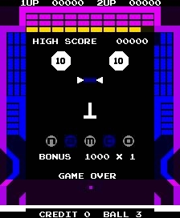
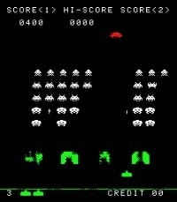
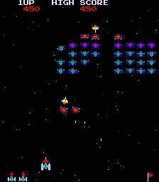

第１章：マシンへようこそ
コンピュータには特に興味はありません。人とコミュニケーションをとれる映像をつくり出したいのです。映像を使用する媒体はコンピュータだけでなく、映画やテレビそのほかの視覚媒体でもいいのですが、私はたまたまコンピュータを使っています。
岩谷徹
自己流の才能ある青年、岩谷徹がナムコに入社したのは1977年のことでした——ナムコは東京を拠点とするアミューズメント企業で、当時の主力製品は投影式の乗り物や光線銃の射撃場でした。
訳注：当時の主力製品とは『フォーミュラX』（1973年）やクレー射撃の『シュータウェイ』（1977年）など、ビデオゲーム市場に参入する以前のいわゆる“エレメカ”のことです。
彼は当時22歳で、コンピュータ、視覚芸術、グラフィック・デザインの正式な訓練を受けていませんでしたが、岩谷と面会した幹部たちには彼のゲームデザインに対する創造性と適性は明らかでした。幹部たちは、社内で役職を与えることを保証して彼に雇いたいと持ちかけ、岩谷はそれを受け入れました。
岩谷はやがてナムコに新設されたビデオゲーム部門に配属され、ゲームタイトルのデザインに携わることになりました。彼はこのプロジェクトでゲームデザイナーの役割を担いますが、コンピュータスキルが十分ではないために、実際のコードを書くプログラマーとペアになることを必要としました。
当時のゲームはコーディングしたプログラマー自身で設計するのが一般的であり、1977年のゲーム業界では新しい役職でした。岩谷のチームには一般に、プログラマーのほかにも様々な構成部品や装置を開発するハードウェアエンジニア、視覚的なアイデアを実現するグラフィックアーティスト、ゲームに必要な音楽や効果音を担当する作曲家が加わります。
岩谷は当初ピンボールマシンを手がけたいと考えていましたが、ナムコはピンボール事業には興味がありませんでした。その譲歩もあってか、彼が最初にデザインしたGee BeeはアタリのBreakoutに似たパドルゲームでしたが、そのゲーム性は明らかにピンボールへ傾斜していました。
これは1978年に発売されたナムコ初のオリジナルビデオゲーム（それまでは既存のアタリゲームを日本市場に移植しただけ）でしたが、アーケードでそこそこの成功を収めました。
 しかし、パドルゲームは新しいジャンルの台頭で急速に衰退します。1978年にタイトーのスペースインベーダーが空前の大ヒットとなり、業界全体が宇宙をテーマとしたシューティング・ゲームへと転換するのと同時に、日本全国で硬貨不足を引き起こしました。
ゲームメーカー各社はタイトーの成功に対抗すべく、スペースシューターの開発にしのぎを削っていました。ナムコもすぐに追随し、スペースインベーダーのクローンゲームを手掛ける作業チームを割り当てます。
岩谷が別種のゲームデザインを考え始めたのはこの頃でした。彼はシューティングブームの熱狂もまた、以前のパドルゲームのように消えゆく運命にあると感じていたのです。
岩谷は新たなスペースシューターを作るのではなく、暴力や紛争に焦点を当てず、性別を問わないどちらの客層にもアピールする新機軸のゲームデザインを取り入れたいと考えていました。
彼が着想を得たのは、怪物から子供たちを守るためにその怪物を食べてしまう生き物の童話でした。岩谷のデザイン手法のひとつに“物語から連想されるキーワードをとりあげてアイデアを発展させる”というものがあり、漢字の食べるという言葉がゲームの前提となりました。
クチ（口）という漢字は正方形であり、ゲームの主人公に着想を与えました。岩谷が“ピザのピースから着想を得た”という有名な伝説は彼自身の承認によるものでしたが、完全には正しくありません：
まあ、それは半分真実です。日本語では口の文字は正方形です。ピザのように円形ではありませんが丸めることにしました。パックマンの形を単純にしたかったのです。私がこのゲームをデザインしているとき誰かが目を追加するよう提案しました。しかし目をつけるとメガネや口ひげもつけたくなるし、キリがないので却下しました。
基本コンセプトのもうひとつは“食べ物”です。当初のデザインでは画面いっぱいの食べ物の中にプレイヤーを置いていました。考えてみるとプレイヤーがどうしたらいいのかわからないことに気づきました。ゲームの目的がわかりにくいのです。そこで迷路を作ってそこに食べ物を置きました。そうすればゲームをプレイした人はみな、迷路の中を移動することで何らかの構造を得ることができます。
日本にはパクパクという俗語があり、食事中の口を開閉する動作を表していてます。パックマンという名前はこの言葉に由来しています。
岩谷徹
子どもの物語におけるモンスターは迷路上のプレイヤーを追いかける４匹のゴーストとして含まれ、緊迫する要素を提供します。プレイヤーへの攻撃は果てしない攻撃ではなく、波状攻撃（スペースインベーダーに類似）になるように設計されており、各ゴーストには独自の個性や性格が与えられました。
子どもの物語には心の概念、そしてモンスターに噛みつく生き物に使用される生命力も含まれていました。岩谷は物語のこの側面を迷路上にある４個のパワークッキーとして取り入れました。これによりゴーストの形勢を逆転させることができ、プレイヤーに噛みつかれる弱みを持つことになります。
 名前と基本的なデザインが整ったので、岩谷は仕事を始める準備ができていました。ナムコはPuck-Manを生き生きとさせるために、岩谷のチームにプログラマー（船木茂雄）、ハードウェアエンジニア、筐体デザイナー、音楽作曲家（甲斐敏夫）を割り当てました。
1979年初頭に開発が始まり、その年にはPuck-Manの開発サイクル中に岩谷からピンボールをテーマにした２つの新しいデザイン（BombBeeとCutieQ）がリリースされました。 どちらもGeeBeeに似ていましたが、ゲーム性が強化されビジュアルが改善されました。
この数か月のあいだスペースインベーダーのクローンゲームに取り組んでいたナムコのチームは、技術的な一大成果を上げたばかりでした。それは当時主流だったカラーセロハンを備えたモノクロ画面の代わりに、本物のマルチカラーRGBディスプレイを採用した最初のゲームでした。
他のチームが躍進したおかげで、岩谷は自身のデザインを引き立てる新たな可能性として色彩を手に入れました。彼はすぐにゲームへ取り入れることにし、女性にアピールするためにゴーストの体にパステルカラーを選び、表情豊かな青い目を追加しました。迷路には紺色が使われ、パックマンは鮮やかな黄色で彩られました。
Puck-Manの外観および操作感は１年以上進化し続けました。迷路を通るゴーストの個性的な行動パターンを開発し、盤面がクリアされたさいのゲーム難易度と変数の微調整に多大な時間と労力が費やされました。
ある時点でボーナスシンボル（ボス･ギャラクシアンを含む）が追加され、最終的にゴーストの名前はアカベエ、ピンキー、アオスケ、グズタとなりました。効果音と音楽はゴーストの絶えまない調整と併行して、開発が終わりかけたころに追加された仕上げの一部でした。
Puck-Manの開発期間は、それまでのビデオゲームのなかでは最長となる１年５か月を要しました。そして1980年５月22日、ついに日本のアーケードにリリースされました。当初からゲームはそこそこ上手くいきましたが、一夜にして脚光を浴びることはありませんでした。
実際、ナムコの多色になったスペースインベーダーのクローンであるギャラクシアンのほうが一般受けがよく、男性客を中心としたプレイヤー層の日本においては、Puck-Manのカートゥーン調のキャラクター、迷路、パステルカラーに戸惑いをおぼえたのに対し、宇宙で敵と撃ち合うギャラクシアンにはすぐ馴染めたのです。
Midwayは米国でコイン投入式ビデオゲームを販売していた会社であり、常に日本から次のヒット作を求め、ライセンスを取得してアメリカに持ち込んでいました。彼らはPuck-Manとギャラクシアンの両方を選び、筐体とアートワークを変更して製造を容易にし、よりアメリカ的な外観に仕立てました。
![[アメリカ版Pac-Manの筐体]](imgs/02-06_cabinet3.png) Puck-Manは多数の改装が施されました： 筐体は白から鮮やかな黄色に変更され、アーケードで目立つようにしました。アートワークは細部までこだわった多色から、３色のパックマン（目と足がある）と青いゴーストが象徴的なよりチープなものに置き換えられました。
Puck-Manは多数の改装が施されました： 筐体は白から鮮やかな黄色に変更され、アーケードで目立つようにしました。アートワークは細部までこだわった多色から、３色のパックマン（目と足がある）と青いゴーストが象徴的なよりチープなものに置き換えられました。
ゴーストには英語名（ブリンキー、ピンキー、インキー、クライド）がつけられ、namcoのタイトルはMidwayに変更されました。Puck-Manの最も重要な変更点はその名前でした。Midwayの懸念は、悪意ある無法者が不快な蔑称にするためにPuck-ManのＰをＦに替えるのが簡単すぎるということでした。
Midwayは自社製品からこの言葉を連想させたくないと考え、1980年10月にアメリカのアーケードでリリースする前にゲーム名をPac-Manに変更しました。
しかしアメリカでは、これら２本のタイトルをとりまく状況は日本とは逆転していました。ギャラクシアンはアメリカのアーケードを席巻したシューティングブームの波にのまれ、1980年の秋までにDefenderのようなより先進的なビデオゲームとすでに競合していました。
結局のところ、ギャラクシアンはアメリカと日本でまずまずの成功を収めましたが、元々のスペースインベーダーのような大ヒットには至りませんでした。Pac-Manの事情は異なります。類似するゲームはなく、それ自体が独自のジャンルを確立していました。鮮やかな黄色の筐体、ビジュアル、サウンドが大きな注目を集めました。このようなゲームはこれまで誰も見たことがなかったのです。
中毒性のあるゲーム性と難易度の上昇への挑戦は熱心なゲーマーを大いに楽しませ、ゲームのシンプルさは年少の子供たちにアピールしました。戦争のようなモチーフと暴力の欠如は、岩谷が望んでいたようにかなりの女性客を引きつけました——ビデオゲームとして初のことです。暴力的なアーケードゲームを警戒している親でさえなんの問題もなく、可愛らしく無害なPac-Manというゲームを子供たちに遊ばせました。
Pac-Manは後にも先にもないほど世界中の人々の興味をかき立て続けました。それは世界規模での真の現象であり、初年度だけで10万台以上のマシンを販売しました。取っ付きやすくも上達するのが難しいことで名高く、学童からウォール街の重役まで誰もが四半期ごとに増え続けるPac-Manマシンを手に取りました。
1982年までにPac-Manの商品は文字どおりいたる所にありました。Tシャツ、帽子、キーホルダー、リストバンド、ベッドシート、芳香剤、壁かけ時計、コップ、トレーディングカード、ステッカー、シリアルボックス、漫画、さらには土曜朝のアニメです。
“Pac-Man Fever”というノベルティソングはラジオで盛んに流され、米国のビルボードチャートで９位になりました。多くの本が書かれており、優秀なプレーヤーがハイスコアを達成するためのヒントやコツを提供しています。ビデオゲームの攻略本が出版されたのは史上初のことでした。
それから30年以上経ってもPac-Manは歴史上最も売れているコイン投入式ビデオゲームであり続けています。今でも米国で最も広く認知されているビデオゲームのキャラクターと見なされている彼の肖像は、400を超える製品について250を超える企業にライセンス供与されています。
彼の名前は敵対的買収から身を守る方法を説明する用語としてビジネス界に採用されました（防御側の企業は“パックマン・ディフェンス”として知られる対抗として大企業を飲み込みます）。 ワシントンD.C.のスミソニアン博物館にはアップライト式のPac-Manマシンも展示されています。
原点となるコイン投入式タイトルへの関心が完全に薄れることはありません。ナムコがPac-Manをはじめとするアーケードの名作を現代の家庭用ゲーム機に再販したおかげで、新世代のパック中毒者が自分より年をとったゲームに手をやいています。
アーケードROMチップのソフトウェアコピーを使用して、100％の精度でゲームを再現するパソコンで利用可能な高品質のアーケードエミュレータ（MAMEなど）の出現により、多くのクラシックタイトルも存続しています。オリジナルPac-Manのアーケード版に関する情報が掲載されたいくつかのWebページはPac-Man - WikipediaやKiller List Of Video Gamesなどで見つけられます。